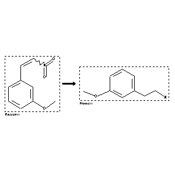

 |
| FA | RX(1); FLST(1); RX(3) |
Reaction (1 of 1)
| Reaction ID | 319827 |
| Reactant BRN | 2094211 |
| Reactant | 3-(2-nitro-vinyl)-anisole |
| Product BRN | 775202 |
| Product | 3-methoxy-phenethylamine |
| No. of Reaction Details | 3 |
Reaction Details (1 of 1)
| Reaction Classification | Preparation |
| Reagent | platinum; sulfuric acid; acetic acid |
| Pressure | <10 |
| Other Conditions | Hydrogenation |
| Comment | Handbook |
| Citation Pointer | 2193221; Journal; Cardwell; McQuillin; JCSOA9; J.Chem.Soc.; 1949; 708, 712; |
Reaction Details (2 of 1)
| Reaction Classification | Preparation |
| Yield | 73.5 percent (BRN=775202) |
| Reagent | H2 |
| Catalyst | carbon palladium 10percent |
| Temperature | 85 |
| Pressure | 37503 |
| Citation Pointer | 5672793; Journal; Hocquaux, Michel; Marcot, Bernard; Redeuilh, Gerard; Viel, Claude; Brunaud, Marcel; et al.; EJMCA5; Eur.J.Med.Chem.Chim.Ther.; FR; 18; 4; 1983; 319-329; |
Reaction Details (3 of 1)
| Reaction Classification | Preparation |
| Reagent | LiAlH4 |
| Solvent | diethyl ether |
| Citation Pointer | 9577; Journal; Jirkovsky,I.; Protiva,M.; CCCCAK; Collect.Czech.Chem.Commun.; GE; 28; 1963; 3096-3105; |
Reference (1 of 3)
| Citation Number | 9577 |
| Document Type | Journal |
| Authors | Jirkovsky,I.; Protiva,M. |
| CODEN | CCCCAK |
| Journal Title | Collect.Czech.Chem.Commun. |
| Language Code | GE |
| (Series) Volume | 28 |
| Publication Year | 1963 |
| Page | 3096-3105 |
Reference (2 of 3)
| Citation Number | 2193221 |
| Document Type | Journal |
| Authors | Cardwell; McQuillin |
| CODEN | JCSOA9 |
| Journal Title | J.Chem.Soc. |
| Publication Year | 1949 |
| Page | 708, 712 |
Reference (3 of 3)
| Citation Number | 5672793 |
| Document Type | Journal |
| Authors | Hocquaux, Michel; Marcot, Bernard; Redeuilh, Gerard; Viel, Claude; Brunaud, Marcel; et al. |
| CODEN | EJMCA5 |
| Journal Title | Eur.J.Med.Chem.Chim.Ther. |
| Language Code | FR |
| (Series) Volume | 18 |
| Number | 4 |
| Publication Year | 1983 |
| Page | 319-329 |